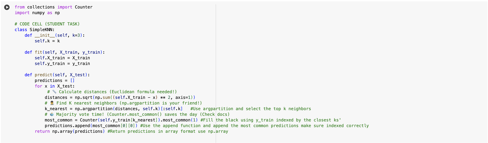

Introduction
As part of my CIS 3990: Introduction to Artificial Intelligence class, we implemented one of the simplest yet most powerful machine learning algorithms — **k-Nearest Neighbors (KNN). KNN is widely used in classification tasks due to its intuitive approach and straightforward implementation.
The beauty of KNN lies in its simplicity: the algorithm makes predictions based on the closest data points in the training set. This makes it both effective and easy to understand.
In this blog post, I’ll walk you through how I implemented a KNN classifier from scratch and how it works in practice.
Implementing KNN (k-Nearest Neighbors)
KNN is a simple but powerful algorithm that: 1. Stores training data 2. Finds the K closest points to a test sample 3. Assigns the most common label among those neighbors
Building a Simple KNN Class
This class: - Stores training data (X_train, y_train) - Uses Euclidean distance to find nearest neighbors - Returns the most common label among them italicized text
Part 1: KNN Classifier Playground Goal: Build your own KNN classifier and see decision boundaries evolve!
Step 1: Implement Simple KNN Help Professor AI finish the KNN class!
KNN Algorithm
Initialize SimpleKNN Class
- Set the number of neighbors (k) with default value 3
Train the model (fit function)
- Store the training data points (X_train)
- Store the corresponding labels (y_train)
Make predictions (predict function)
- Initialize empty list for predictions
- For each test point:
- Calculate Euclidean distance to all training points
- Subtract test point from all training points
- Square the differences
- Sum along axis 1
- Take square root of sum
- Find indices of k nearest neighbors
- Use argpartition function to get k smallest distances
- Get labels of k nearest neighbors
- Perform majority voting
- Use Counter to count label occurrences
- Find most common label
- Append most common label to predictions
- Calculate Euclidean distance to all training points
- Return predictions as a numpy array
Helper Functions
- numpy.sqrt(): Calculate square root
- numpy.sum(): Sum array elements
- numpy.argpartition(): Partially sort array to find k smallest elements
- Counter(): Count occurrences of elements in a list
- most_common(): Get most common element(s) from Counter object/

üè¶ MNIST Data & KNN Boundaries
We load the digits dataset, scale, and use PCA to reduce the features to 2 dimensions. - This helps us plot decision boundaries for each digit (0-9). - We then draw lines/regions indicating which digit the KNN would classify a point as.
üìä Visualizing KNN on MNIST Digits Goal: Explore how KNN performs on PCA-reduced MNIST digits!
(Example implementation based on your KNN implementation)
üß© Custom Synthetic Data
Using Gaussian blobs, we generate random clusters to mimic real data. - Perfect for visualizing how KNN forms boundaries. - Perfect to test overfitting (small K) vs. underfitting (large K).
Data Generation and Preprocessing
- Define function create_realistic_data():
- Set cluster properties (position, number of samples, standard deviation)
- For each cluster:
- Generate x and y values using normal distribution
- Combine x and y values into 2D points
- Assign cluster ID to each point
- Combine all cluster data
- Return features (X) and labels (y)
- Call create_realistic_data() to generate X and y
Visualization Functions
- Define function plot_knn_boundary(knn, X, y, title):
- Create a figure
- Generate a mesh grid for the plot area
- Predict classes for each point in the mesh grid
- Create a custom colormap
- Plot decision regions using contourf
- Plot original data points with scatter
- Add title, labels, and colorbar
- Display the plot
- Define function plot_accuracy_curve(X, y, max_k):
- Split data into training and testing sets
- For k from 1 to max_k:
- Create and train KNN model
- Make predictions on test set
- Calculate and store accuracy
- Plot k values vs accuracies
- Add title, labels, and grid
- Display the plot
üåê Wikipedia + OpenAI Setup
- We create a
wikiclient to talk to Wikipedia. - We retrieve the page content of each article.
- Then we embed that text with
get_embedding.
üåå Wikipedia Semantic Explorer Mission: Become an AI librarian finding related articles!
üîë API Setup Unlock the knowledge vaults
Let’s set up the OpenAI API and Wikipedia client.

üìú get_article_text Function üìú
- Connects to Wikipedia using
wiki.page. - Checks if the page exists.
- Returns the page’s text for embedding or analysis.
üìö Fetch Wikipedia Articles Implement a function to fetch article content.
Setup and Initialization
- Initialize Wikipedia API with user agent
- Define list of article titles to fetch
Article Fetching and Embedding
Function: get_article_text(title)
- Fetch Wikipedia page for given title
- If page exists, return page text
- Otherwise, return None
Function: get_embedding(text, model)
- Truncate text to 8000 characters
- Count tokens in truncated text
- Update total token count for cost tracking
- Generate embedding using OpenAI API
- Return embedding vector
Main Embedding Process
- Initialize empty lists for embeddings and labels
- For each article title:
- Fetch article text
- If text is retrieved:
- Generate embedding
- Add embedding to embeddings list
- Add title to labels list
- Print success message
- If fetch fails, print failure message
KNN Implementation
KNN Class Initialization
- Store embeddings as numpy array
- Normalize embeddings
- Store labels
KNN Query Method
- Generate embedding for input text
- Normalize query embedding
- Calculate similarities using dot product
- Find indices of top k similar articles
- Return list of (label, similarity) pairs for top matches
KNN Usage
- Initialize KNN with generated embeddings and labels
- (Ready for querying with new text inputs)
üîó KNN Class for Wikipedia Articles üîó
- Holds embeddings and article labels/titles.
- On query, it:
- Embeds your query text.
- Computes cosine similarity with all stored article embeddings.
- Sorts by similarity and returns the top matches.
üìö Build the KNN Class
Implement a KNN class to find similar articles.
Example 1: Finding Similar Articles
- Define query text: “Neural networks in machine learning”
- Use KNN to find top 3 similar articles:
- Call knn.query() with query text and k=3
- Store results
- Print “Top Matches:”
- For each result (title and score):
- Print title and formatted score
Example 2: Comparing Two Specific Articles
- Define two article titles:
- article1 = “Artificial Intelligence”
- article2 = “Quantum Computing”
- For each article:
- Fetch article text using get_article_text()
- Generate embedding using get_embedding()
- Calculate similarity:
- Normalize both embeddings
- Compute dot product of normalized embeddings
- Print similarity score between the two articles
üìö Plot Similarity Heatmap
Visualize the similarity matrix.
Create Similarity Matrix
- Calculate dot product of embeddings with their transpose: similarity_matrix = dot_product(embeddings, transpose(embeddings))
Visualize Similarity Matrix as Heatmap
Create a new figure with size 10x8
Generate heatmap:
- Use imshow() to display similarity matrix
- Set colormap to “viridis”
Set x-axis labels:
- Use article titles as labels
- Set tick positions to range from 0 to number of articles
- Rotate labels 90 degrees
Set y-axis labels:
- Use article titles as labels
- Set tick positions to range from 0 to number of articles
Add colorbar:
- Label it “Cosine Similarity”
Set title of the plot to “Wikipedia Article Similarities”
Display the plot
Takeaway: KNN’s Strength and Simplicity
Implementing k-Nearest Neighbors was a great exercise to reinforce my understanding of how classification algorithms work. The KNN algorithm is incredibly intuitive because it relies on proximity and majority voting to classify data.
Here’s what I learned from implementing KNN:
KNN is easy to understand and implement: It’s based on simple distance calculations and majority voting. This makes it one of the simplest algorithms to grasp, especially for beginners.
The value of distance metrics: The Euclidean distance formula, which is used to calculate the proximity between data points, plays a crucial role in determining which points are most similar. You can experiment with different distance metrics for different types of data.
Performance considerations: While KNN is a great algorithm, it can become slow when working with large datasets because it calculates the distance to every single training point for each test sample. For large datasets, optimizations like KD-Trees or Ball Trees can be used to speed up the process.
Choosing the right value for K: The performance of KNN depends heavily on the value of k. A small k can be sensitive to noise, while a large k might smooth out the classification too much. Tuning k is essential for improving the model’s accuracy.
Final Thoughts
Overall, implementing KNN was a great learning experience. Despite being a simple algorithm, it provides a strong foundation for understanding the basics of classification tasks. It helped me appreciate how distance-based classification works and how we can use it to classify new, unseen data based on patterns in the training set.
In future projects, I’ll experiment with different distance metrics, fine-tune the value of k, and possibly look into more advanced techniques to improve the efficiency of KNN.